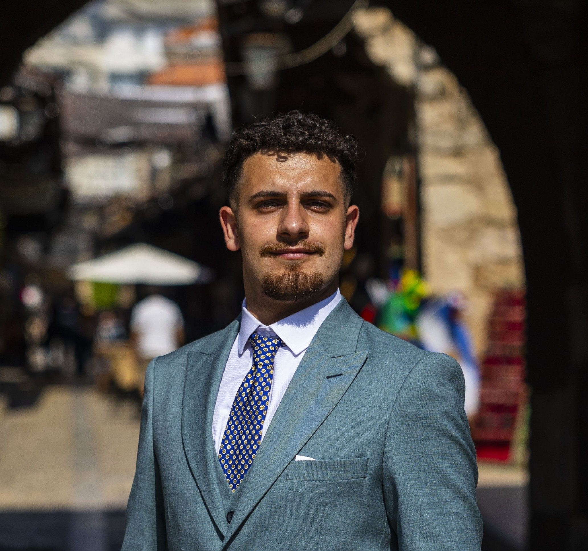

B.E. MECHANICAL ENGINEERING · LAU · 2026
CURRENTLY PURSUING M2 MARS · SORBONNE UNIVERSITÉ
PARIS, FRANCE
Mechanical Engineer passionate about collaborative robotics, intelligent systems, and human-centered technologies, with a particular interest in healthcare and rehabilitation applications.

Engineering foundations. Intelligent systems. Human-centered impact.
I am a Mechanical Engineer who graduated from the Lebanese American University in June 2026, currently pursuing an M2 in Mechatronics, Artificial Intelligence and Robotic Systems (MARS) at Sorbonne Université in Paris.
Through research and hands-on projects, I have developed a strong interest in robotics, sensing, embedded systems, and intelligent control. I am particularly drawn to collaborative and assistive robotics, where engineering can improve how people interact with technology, especially in healthcare and rehabilitation.
Sorbonne Université · 2026–27
Mechanical Engineering · LAU
LAU CGPA · High Distinction
Charbel Khairallah Engineering Award
Wearable Rehabilitation & Sensing
Science Progress · Intelligent Manufacturing
A selection of engineering, robotics and research projects.
Development of a 3D-printable wearable rehabilitation device combining soft pneumatic sensing with augmented reality for physical rehabilitation.
Development of a piezo-actuated ultrasonic machining system for micro-surface texturing, combined with vision-based neural network quality assessment.
Study and implementation of mathematical models and control methods for robotic manipulators as part of my M2 studies.
New robotics, artificial intelligence and mechatronics projects will be added here throughout my M2 studies.
Research experience in advanced manufacturing, robotics and intelligent systems.
Research publication · Science Progress · 2026
Research presented at the 18th HSM Conference, Metz.
Engineering and technical skills developed through academic, research and practical projects.
Mechanical Design
CAD
Manufacturing
CNC
3D Printing
Robot Kinematics
Manipulator Control
Mechatronics
Sensors & Actuators
Python
MATLAB
C/C++
Machine Learning
Computer Vision
SolidWorks
MATLAB / Simulink
CAD / CAE Tools
Experimental Testing
OPEN TO OPPORTUNITIES
Interested in robotics, mechatronics, intelligent systems, or potential collaboration?